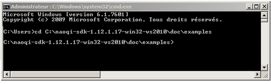

| Step | Action |
|---|---|
Open a Command Prompt and go to the examples folder included in the C++ SDK documentation. $ cd /path/to/cpp/sdk/doc/examples
For example, Windows users will do:  |
|
Type this command in order to create a worktree. $ qibuild init
|
|
Type this command in order to create a default toolchain using the feed from the C++ SDK: $ qitoolchain create mytoolchain /path/to/cpp/sdk/toolchain.xml --default
Where mytoolchain is the name you want to give to this specific toolchain (you could have several). |
|
Type these commands in order to configure and build the helloworld project: $ cd core/helloworld
$ qibuild configure -c mytoolchain
$ qibuild make -c mytoolchain
|
|
| If those steps were successful, you should able to open the project in your favorite IDE and start working on your code. See section: Using an IDE from qibuild documentation. |
You have to be on Linux to be able to compile code for the robot.
| Step | Action |
|---|---|
Get the cross-toolchain that matches your robot version (atom for V4 and later, geode for previous version), and extract it, say in /path/to/atom/ctc Note on linux64 you will have to install some 32bits libraries for the cross-compiler to work. On ubuntu, you should use something like: $ sudo apt-get install gcc-multilib libc6-dev libc6-i386
|
|
Create a toolchain using the feed from the cross-toolchain. $ qitoolchain create cross-atom /path/to/ctc/
$ qibuild configure -c cross-atom
$ qibuild make -c cross-atom
|
First you need to choose a qibuild “worktree”.
This path will be the root from where qiBuild searches to find the sources of your projects.
In the following document, we will use the notation QI_WORK_TREE to refer to this path.
Then go to this directory and run:
$ qibuild init --interactive
If you want, you can also create a worktree inside the SDK, so that you will be able to easily compile all our examples.
to do so, simply run:
$ cd /path/to/sdk/doc/examples
$ qibuild init --interactive
You will be asked to choose a CMake Generator.
Warning: Although qiBuild supports many platforms and configurations, only a few ones are supported in the current C++ SDK:
Here you should tell qibuild to use a toolchain.
Simply run:
$ qitoolchain create <name> <path/to/sdk/toolchain.xml> --default
You can choose whatever name you want for the toolchain (for instance ‘linux32’ on linux).
This will tell qibuild that you have a new toolchain, and CMake will look for packages in the same directory the toolchain.xml resides.
If everything goes well, you should see:
$ qitoolchain create linux32 /path/to/cpp/sdk/toolchain.xml --default
Now using toolchain linux32 by default
$ qitoolchain info
Toolchain linux32
Packages:
naoqi-sdk
in /path/to/cpp/sdk
Now you can either:
$ qibuild create foo
$ qibuild configure foo
$ qibuild make foo
$ qibuild configure helloworld
$ qibuild make helloworld
Note that a build directory has been created for you by qibuild, in build-<name>, where <name> is the name you pass to the qitoolchain command.
On Unix and Mac, you can open the root CMakeLists with QtCreator and tell it to use the build folder created by qibuild.
On Windows, a .sln should have been generated for you in the build directory.
In any case, you can open the correct IDE by using:
$ qibuild open <project_name>
Finally, note that on Unix, qibuild will build your project on debug, to build in release, use:
$ qibuild configure --release <project_name>
$ qibuild make --release <project_name>
You will note that qibuild will use a different build directory (build-<toolchain-name>-release).
You just have to tell qibuild to use another toolchain.
Simply run:
$ qitoolchain create opennao-geode /path/to/geode-ctc/toolchain.xml
for instance.
You can now cross-compile by using:
$ qibuild configure -c opennao-geode
$ qibuild make -c opennao-geode
And of course, cross-compile in release is done with:
$ qibuild configure -c opennao-geode --release
$ qibuild make -c opennao-geode --release
If you want to discover the full power of the qiBuild framework, you can read more about it in the qiBuild documentation